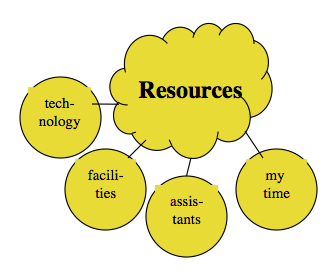

6.7 Recursos
{kind=link}


Assim como no caso das características dos alunos, você pode não ter muito controle sobre os recursos disponíveis, mas a existência deles (ou a falta deles) terá grande impacto no planejamento do ensino. A obtenção de recursos adequados é frequentemente uma das tarefas mais desafiadoras para muitos professores e instrutores. O papel dos recursos no planejamento da aprendizagem é também discutido ao longo do livro, mas particularmente no:
- Capítulo 1, Seção 5
- Capítulo 9, Seção 7
- Capítulo 10, Seção 4.2
- Capítulo 12, Seção 6
- Capítulo 13, Seção 3
- Capítulo 13, Seção 4
Aqui, o foco limita-se apenas a delinear o papel geral dos recursos na criação de um ambiente de aprendizagem eficaz.
6.7.1 Apoio à docência
O apoio à docência é para os professores o equivalente ao suporte que os estudantes recebem para o seu aprendizado. Professores adjuntos ou contratados por período letivo, assistentes de ensino, bibliotecários, oficinas de desenvolvimento docente e equipes de suporte técnico (incluindo designers instrucionais, produtores de mídia e pessoal de suporte de TI) constituem formas de apoio à docência.
É importante pensar na melhor forma de utilizar o pessoal de apoio. Nas universidades, a tendência consiste em dividir uma turma grande em turmas menores, cada uma sob a responsabilidade de um professor contratado ou assistente de ensino, que depois funcionam de forma relativamente independente, verificando-se frequentemente grandes diferenças na qualidade do ensino de cada grupo, em função da competência dos assistentes de ensino. Contudo, as novas tecnologias permitem que o ensino seja organizado de forma diferente e mais consistente.
Por exemplo, um professor titular pode definir o currículo global e a estratégia de avaliação e, trabalhando em conjunto com um designer instrucional, elaborar o planejamento geral de uma disciplina. Os professores contratados e/ou assistentes de ensino são depois contratados para ministrar a disciplina presencialmente, on-line ou, mais frequentemente, em uma mistura de ambas, sob a supervisão do professor titular (ver o National Center for Academic Transformation para obter exemplos). As salas de aula invertidas (flipped classrooms) constituem outra forma de organizar os recursos de maneira diferente (ver Blended Learning in Introductory Psychology como exemplo). Um dos modelos consiste em o professor titular gravar as aulas expositivas que os estudantes assistem no seu tempo livre, reunindo-se depois os alunos em subgrupos com um ou mais assistentes de ensino para esclarecer conceitos, debater temas ou realizar outras atividades letivas. Estes subgrupos podem reunir-se presencialmente ou on-line.
Existem também oportunidades para aumentar os recursos através da utilização da tecnologia. A aprendizagem on-line pode atrair mais novos estudantes (por exemplo, de fora da região geográfica habitual) e, consequentemente, gerar mais receitas através de verbas governamentais para os estudantes adicionais e/ou receitas diretas de propinas. Desta forma, podem verificar-se economias de escala que permitiriam à instituição contratar mais docentes titulares ou contratados a partir das receitas adicionais geradas pelos estudantes on-line suplementares.
De fato, existem hoje exemplos de programas de mestrado totalmente on-line que cobrem amplamente a totalidade dos seus custos, incluindo a contratação de professores pesquisadores para lecionar no programa, apenas a partir das receitas de matrículas (o mestrado on-line em Tecnologia Educacional da Universidade da Colúmbia Britânica, Master in Educational Technology, constitui um exemplo, embora as suas propinas sejam idênticas às dos programas de mestrado presenciais — ver Bates e Sangra, 2011).
Assim, os recursos (ou a falta deles) podem exercer uma influência profunda na eficácia de um ambiente de aprendizagem.
6.7.2 Instalações
As instalações físicas disponíveis para um professor e para os estudantes incluem salas de aula, laboratórios e a biblioteca. Trata-se dos componentes mais tradicionais de um ambiente de aprendizagem. No entanto, as instalações físicas também podem restringir o design da aprendizagem, porque, por exemplo, a configuração física de um auditório ou de uma sala de aula pode limitar as oportunidades de discussão ou de trabalho em projetos, ou um professor pode ver-se obrigado a organizar o ensino em torno de três horas de aulas expositivas e seis horas de laboratório por semana para se adequar aos requisitos institucionais mais amplos de distribuição de salas de aula (ver How Online Learning is Going to Affect Classroom Design sobre tentativas de redefinir salas de aula para a era digital).
A aprendizagem on-line pode libertar os professores e os estudantes destas rígidas restrições físicas, mas continua a existir a necessidade de estruturar e organizar as unidades ou módulos de ensino, mesmo ou sobretudo quando se ensina on-line. Por exemplo, os sistemas de gestão de aprendizagem, como o Blackboard ou o Moodle, oferecem um ambiente on-line estruturado, mas também trazem as suas próprias limitações.
6.7.3 Tecnologia
As tecnologias de sala de aula, como quadros brancos, projetores e computadores para apresentação, constituem o suporte tecnológico tradicional. Eu incluiria também os livros didáticos nesta categoria, porque veremos no Capítulo 8 que estes constituem uma forma de tecnologia. Contudo, o desenvolvimento de novas tecnologias, em especial os sistemas de gestão de aprendizagem, a captura de aulas expositivas, a transmissão de vídeo e as mídias sociais, trazem implicações radicais para o planejamento do ensino e da aprendizagem. Isto é discutido com muito mais profundidade nos Capítulos 7, 8 e 9, mas, para efeitos de descrição de um ambiente de aprendizagem eficaz, as tecnologias disponíveis para um professor podem contribuir imensamente para a criação de ambientes de aprendizagem interativos e envolventes para os estudantes. No entanto, importa salientar que a tecnologia é apenas um componente no âmbito de qualquer ambiente de aprendizagem eficaz e necessita de ser equilibrada e integrada com todos os restantes componentes.
6.7.4 O tempo do professor
Este é o recurso mais importante e precioso de todos! A construção de um ambiente de aprendizagem eficaz constitui um processo interativo, mas, no final, o design do ensino e, de certa forma, o ambiente de aprendizagem no seu todo dependerão do tempo de que o professor (e a sua equipe) dispõe para lecionar. Quanto menos tempo estiver disponível, mais restritivo tenderá a ser o ambiente de aprendizagem, a menos que o tempo do professor seja gerido com muito cuidado. Mais uma vez, contudo, um bom planejamento do ensino leva em consideração o tempo disponível para lecionar (ver, em particular, o Capítulo 12, Seção 9).
6.7.5 Recursos, tamanho da turma e controle
Nada deixa um professor mais frustrado do que tentar lecionar com recursos inadequados. Seguramente, se a um professor for atribuída uma turma de 200 estudantes, em um grande auditório, sem qualquer apoio letivo adicional, este terá dificuldades em criar um ambiente de aprendizagem rico e eficaz, porque a falta de recursos limita as opções. Por outro lado, um professor com 30 estudantes, acesso a uma vasta gama de tecnologias, liberdade para organizar e estruturar o currículo e com o apoio de um designer instrucional e de um designer web, tem o luxo de explorar uma variedade de designs diferentes e de ambientes de aprendizagem possíveis.
No entanto, é provavelmente quando os recursos são mais escassos que se torna necessária maior criatividade para romper com os modelos de ensino tradicionais. A nova tecnologia, se utilizada adequadamente e estiver disponível, permite que mesmo turmas grandes com poucos recursos disponham de um ambiente de aprendizagem relativamente rico. Isto é discutido mais detalhadamente no Capítulo 13, Seção 5. Ao mesmo tempo, as expectativas necessitam de ser realistas. Oferecer um suporte adequado ao aprendiz com uma relação professor-estudante de 1:200 ou superior constituirá sempre um desafio. São possíveis melhorias através da redefinição do planejamento — mas não milagres. (Para mais informações sobre o aumento da produtividade através do ensino on-line, ver Productivity and Online Learning Redux).
Referências
Bates, A. and Sangrà, A. (2011) Managing Technology in Higher Education: Strategies for Transforming Teaching and Learning San Francisco: Jossey Bass
Atividade 6.7 Quais recursos importam?
- Existem outros recursos que influenciam o planejamento de um ambiente de aprendizagem eficaz que eu deveria ter incluído?
- Winston Churchill disse uma vez: "Nós moldamos os nossos edifícios e, depois, eles nos moldam". Até que ponto você considera que a aprendizagem on-line nos pode libertar de algumas das restrições que os edifícios impõem ao design do ensino e da aprendizagem? Que novas restrições a aprendizagem on-line traz em termos de design?
- Como você se posiciona perante a questão do apoio à docência? Eu próprio tenho sérias reservas quanto à utilização de estudantes como assistentes de ensino nas universidades, em termos de qualidade do ensino (não tanto pelo princípio, mas pela prática). Considero também que os professores contratados por período letivo e adjuntos são mal tratados no que se refere à forma como são geridos. Na Colúmbia Britânica, tivemos dois processos no Supremo Tribunal e uma grande greve de professores por causa do tamanho e da composição das turmas nas escolas e, em particular, sobre quanta ajuda os professores das escolas deveriam receber para lidar com estudantes com dificuldades de aprendizagem. Mas ao introduzir apoios menos qualificados (e mais baratos) para os professores, reforçamos ou enfraquecemos o ambiente de aprendizagem dos estudantes?
Sem podcast da minha parte — esta atividade destina-se à sua reflexão pessoal — as minhas opiniões estão expressas acima.